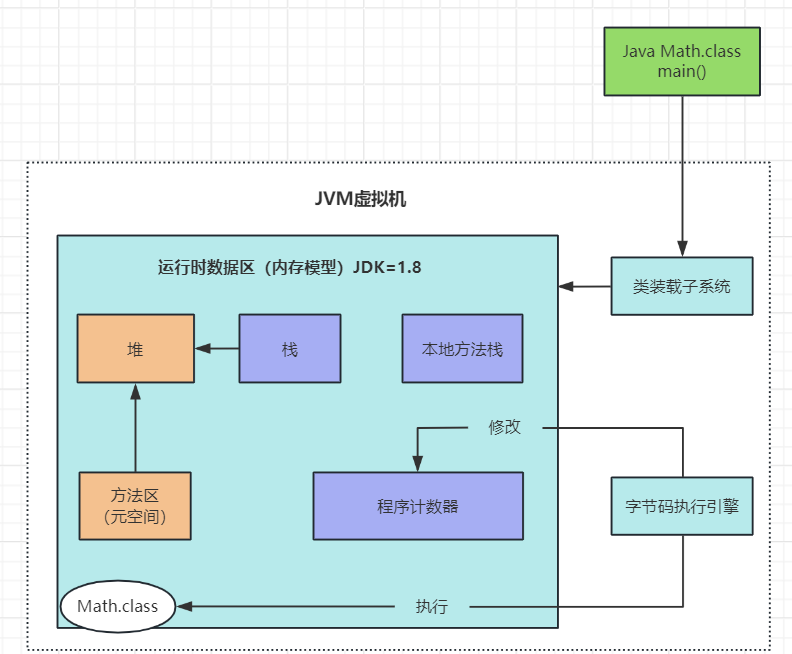
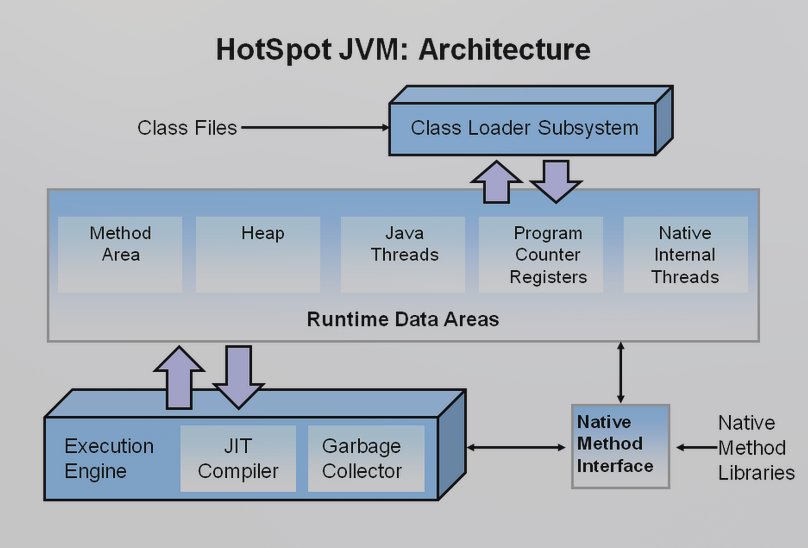
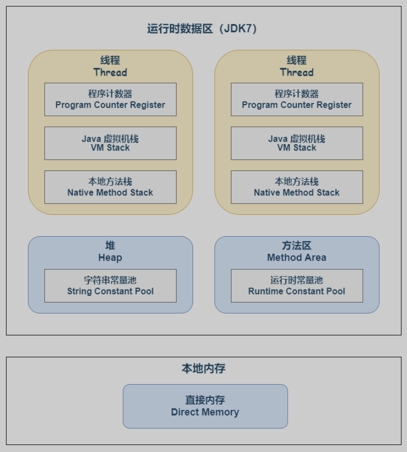
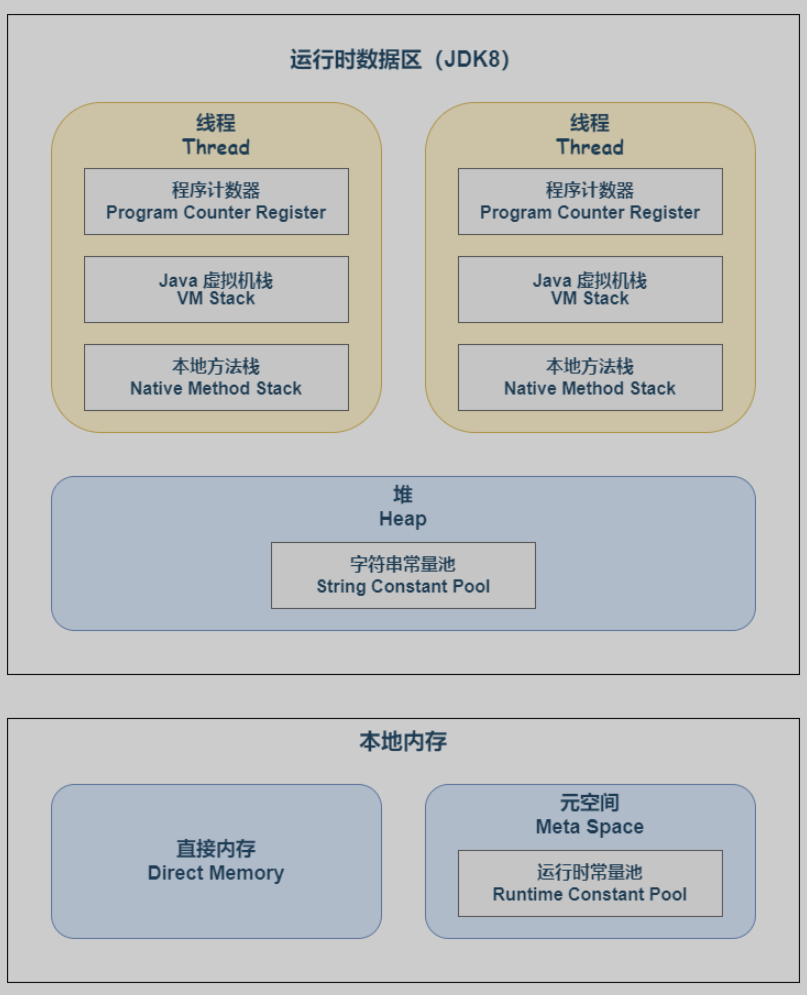
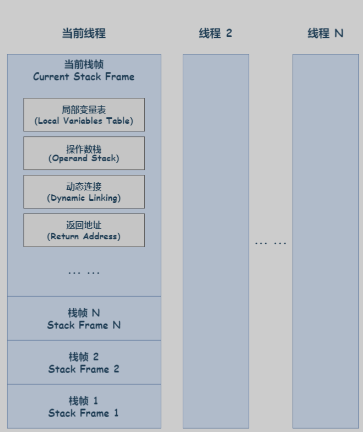
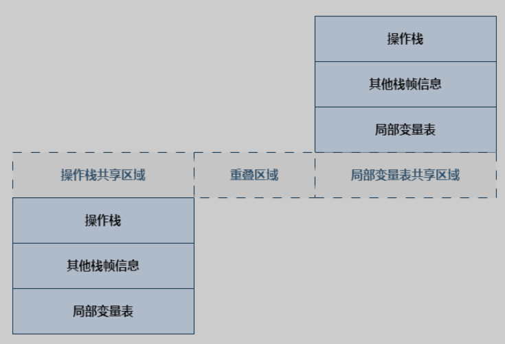

# JVM
# 定义
- 仿真机器（计算机的基本组成：计算单元，控制单元、存储单元、I/O）
- JRE 下，JVM 的主要组件：类装载子系统、字节码执行引擎、运行时数据区
- 特点：跨平台（越来越不突出的优势）

# 简介
# 计算机体系结构
真实计算机的核心部分：
- 指令集 (RISC/CISC)
- CPU
- 寻址方式
- 寄存器
- 存储单元
# JVM 体系结构
核心部分：
- JVM 指令集
- 类加载器
- 执行引擎 - 相当于 JVM 的 CPU
- 内存区 - JVM 的存储
- 本地方法调用 - 调用 C/C++ 等本地方法 `
# 搭建过程
OS 装载 JVM 的主要步骤：
- 创建 JVM 的配置及环境；
- 装载 JVM.dll；
- 初始化 JVM.dll 并挂载到 JNIENV（JNI 接口）实例；
- 调用 JNIENV 实例，处理 class 类。
JNI——Java & Native language Interface, 指的是 java 程序和 native 程序之间的交互接口。由于常见的 wins/linux 系统为 C/C++ 实现，所以可以一般性地认为是 Java 和 C/Cpp 程序之间的接口。详见：JNI
# Hotspot JVM
Hotspot JVM 是 Oracle 公司开发的 JVM 实现，广泛应用于 Java SE 和 Java EE 平台。它的主要特点包括：
- 即时编译（JIT, just-in-time）：Hotspot JVM 使用即时编译技术，将热点代码编译为本地机器码，以提高执行效率。
- 垃圾回收（GC, garbage collection）：Hotspot JVM 提供多种垃圾回收算法，如串行 GC、并行 GC、CMS（Concurrent Mark-Sweep）和 G1（Garbage-First）等，以自动管理内存。
- 多线程支持：Hotspot JVM 支持多线程编程模型，允许多个线程并发执行，提高程序的并发性能。
- 性能优化：Hotspot JVM 通过动态优化技术，能够在运行时分析代码的执行情况，并进行性能优化。
- 平台无关性：Hotspot JVM 是跨平台的，可以在不同的操作系统上运行相同的 Java 程序。

# lifetime of JVM
- 启动：启动一个 Java 程序时，一个 JVM 实例就产生了，任何一个拥有 public static void main (String [] args) 函数的 class 都可以作为 JVM 实例运行的起点；
- 运行：main () 作为该程序初始线程的起点，任何其他线程均由该线程启动。JVM 内部有两种线程：守护线程 (daemon thread) 和非守护线程，main () 属于非守护线程，守护线程通常由 JVM 自己使用，java 程序也可以表明自己创建的线程是守护线程；
- 消亡：当程序中的所有非守护线程都终止时，JVM 才退出；若安全管理器允许，程序也可以使用 Runtime 类或者 System.exit () 来退出。
# JVM 内存模型
对于 JDK<=7 和 JDK8+，采用的 JVM 模型是有差异的，可以参照如下示意图。其中黄色部分是线程隔离的，蓝色区域则是线程共享的。


注：图源来自 ref3 & ref1
# 程序计数器
程序计数器（Program Counter Register） 是一块较小的内存空间，它可以看做是当前线程所执行的字节码的行号指示器。字节码解释器工作时就是通过改变这个计数器的值来选取下一条需要执行的字节码指令，它是程序控制流的指示器，分支、循环、跳转、异常处理、线程恢复等基础功能都需要依赖这个计数器来完成。
由于 Java 虚拟机的多线程是通过线程轮流切换、分配处理器执行时间的方式来实现的（时间片轮转），在任何一个确定的时刻，一个处理器都只会执行一条线程中的指令。因此，为了线程切换后能恢复到正确的执行位置，每条线程都需要有一个独立的程序计数器，各线程之间计数器互不影响，独立存储，我们称这类内存区域为 “线程私有” 的内存。
如果线程正在执行的是一个 Java 方法，这个计数器记录的是正在执行的虚拟机字节码指令的地址；如果正在执行的是本地（Native）方法，这个计数器值则应为空（Undefined）。
程序计数器的功能和一般的计算机系统架构中的程序计数器（PC）基本一致，且是唯一不会报 OutOfMemoryError 的 JVM 内存单元。
# Java 虚拟机栈
Java 虚拟机栈（Java Virtual Machine Stacks） 也是线程私有的，它的生命周期与线程相同。Java 虚拟机栈以方法作为最基本的执行单元，描述的是 Java 方法执行的线程内存模型。每个方法被执行的时候，JVM 都会同步创建一个栈帧（Stack Frame），栈帧是用于支持虚拟机进行方法调用和方法执行背后的数据结构。栈帧存储了局部变量表、操作数栈、动态连接、方法返回地址等信息。每一个方法从调用开始至执行结束的过程，都对应着一个栈帧在虚拟机栈里面从入栈到出栈的过程。
一个线程中的方法调用链可能会很长，以 Java 程序的角度来看，同一时刻、同一条线程里面，在 调用堆栈的所有方法都同时处于执行状态。而对于执行引擎来讲，在活动线程中，只有位于栈顶的方 法才是在运行的，只有位于栈顶的栈帧才是生效的，其被称为 “当前栈帧”（Current Stack Frame），与 这个栈帧所关联的方法被称为 “当前方法”（Current Method）。执行引擎所运行的所有字节码指令都只 针对当前栈帧进行操作。以下是对 Java 虚拟机栈帧 4 个基本单元的介绍。

# 局部变量表
局部变量表（Local Variables Table）是一组变量值的存储空间，用于存放方法参数和方法内部定义的局部变量。在 Java 程序被编译为 Class 文件时，就在方法的 Code 属性的 max_locals 数据项中确定了该方法所需分配的局部变量表的最大容量。
局部变量表存放了编译期可知的各种 Java 虚拟机基本数据类型、对象引用（reference 类型，它不同于对象本身，可能是一个指向对象起始地址的引用指针，也可能是指向一个代表对象的句柄或其他与此对象相关的位置）和 returnAddress 类型（指向了一条字节码指令的地址）。这些数据类型在局部变量表中的存储空间以局部变量槽（Variable Slot）来表示，其中 64 位长度的 long 和 double 类型的数据会占用两个变量槽，其余的数据类型只占用一个。局部变量表所需的内存空间在编译期间完成分配，当进入一个方法时，这个方法需要在栈帧中分配多大的局部变量空间是完全确定的，在方法运行期间不会改变局部变量表的大小。
# 操作数栈
操作数栈（Operand Stack）也常被称为操作栈，它是一个后入先出（Last In First Out，LIFO）栈。操作数栈主要作为方法调用的中转站使用，用于存放方法执行过程中产生的中间计算结果。 另外，计算过程中产生的临时变量也会放在操作数栈中。
当一个方法刚刚开始执行的时候，这个方法的操作数栈是空的，在方法的执行过程中，会有各种字节码指令往操作数栈中写入和提取内容，也就是出栈和入栈操作。譬如在做算术运算的时候是通过将运算涉及的操作数栈压入栈顶后调用运算指令来进行的，又譬如在调用其他方法的时候是通过操作数栈来进行方法参数的传递。
操作数栈中元素的数据类型必须与字节码指令的序列严格匹配，在编译程序代码的时候，编译器必须要严格保证这一点，在类校验阶段的数据流分析中还要再次验证这一点。
另外在概念模型中，两个不同栈帧作为不同方法的虚拟机栈的元素，是完全相互独立的。但是在大多虚拟机的实现里都会进行一些优化处理，令两个栈帧出现一部分重叠。让下面栈帧的部分操作数栈与上面栈帧的部分局部变量表重叠在一起，这样做不仅节约了一些空间，更重要的是在进行方法调用时就可以直接共用一部分数据，无须进行额外的参数复制传递了。

# 动态链接
用于一个方法调用其他方法的场景。Class 文件的常量池中有大量的符号引用，字节码中的方法调用指令就以常量池中指向方法的符号引用为参数。这些符号引用一部分会在类加载阶段或第一次使用的时候转化为直接引用，这种转化称为静态解析；另一部分将在每一次的运行期间转化为直接应用，这部分称为动态连接。
每个栈帧都包含一个指向运行时常量池中该栈帧所属方法的引用，持有这个引用是为了支持方法调用过程中的动态链接（Dynamic Linking）。Class 文件的常量池中存有大量的符号引用，字节码中的方法调用指令就以常量池里指向方法的符号引用作为参数。这些符号引用一部分会在类加载阶段或者第一次使用的时候就被转化为直接引用，这种转化被称为静态解析。另外一部分将在每一次运行期间都转化为直接引用，这部分就称为动态连接。
符号引用：在编译期间，编译器将类、变量名、方法名等字段替换为指向实际内存地址的引用，这种引用称为符号引用。
静态链接：在编译期间，编译器将符号引用转换为直接引用，这种转换发生在类加载阶段或者第一次使用的时候。
动态链接：在运行期间，如果一个方法调用了另一个方法，而这个方法的类还没有被加载和链接，那么 JVM 将无法定位到这个方法，这时候 JVM 将通过动态连接来解决这个问题。btw, 这里的静动态解析 / 链接和编译器没差。
# 返回地址
方法返回地址用于返回方法被调用的位置，恢复上层方法的局部变量和操作数栈。
Java 方法有两种返回方式，一种是 return 语句正常返回，这时候可能会有返回值传递给上层的方法调用者，方法是否有返回值以及返回值的类型将根据遇到何种方法返回指令来决定；一种是遇到了异常，并且这个异常没有在方法体内得到妥善处理。无论采用何种退出方式，都会导致栈帧被弹出。也就是说，栈帧随着方法调用而创建，随着方法结束而销毁。无论方法正常完成还是异常完成都算作方法结束。
方法返回时可能需要在栈帧中保存一些信息，用来帮助恢复它的上层主调方法的执行状态。 一般来说，方法正常退出时，主调方法的 PC 计数器的值就可以作为返回地址，栈帧中很可能会保存这个计数器值。而方法异常退出时，返回地址是要通过异常处理器表来确定的，栈帧中就一般不会保存这部分信息。方法退出的过程实际上等同于把当前栈帧出栈，因此退出时可能执行的操作有：恢复上层方法的局部变量表和操作数栈，把返回值（如果有的话）压入调用者栈帧的操作数栈中，调整 PC 计数器的值以指向方法调用指令后面的一条指令等。
# 本地方法栈
本地方法栈（Native Method Stack）与虚拟机栈的作用非常相似，二者区别仅在于：虚拟机栈为 Java 方法服务；本地方法栈为 Native 方法服务。
本地方法栈也会在栈深度溢出或者栈扩展失败时分别抛出 StackOverflowError 和 OutOfMemoryError 异常。
# 堆 Heap
# JMM (Java Memory Model) 中的方法
# 分类及标准
- Java 方法：完全 Java 编写的方法
- native 方法：用
native关键字声明，用其他语言 (如 C/C++) 实现的方法
# 进阶 ——Java 内存模型
Java 内存模型简称 JMM (Java Memory Model)，是基于 JVM 的内存结构（物理特性），专注多线程环境下内存可见性、有序性和原子性的技术架构。定义了线程与内存的交互方式，解决了多线程并发问题，核心内容包括：happens-before 原则、volatile、synchronized 等语义。这部分内容将在 Java 内存模型中介绍
# 参考
- ref1
- ref2
- ref3